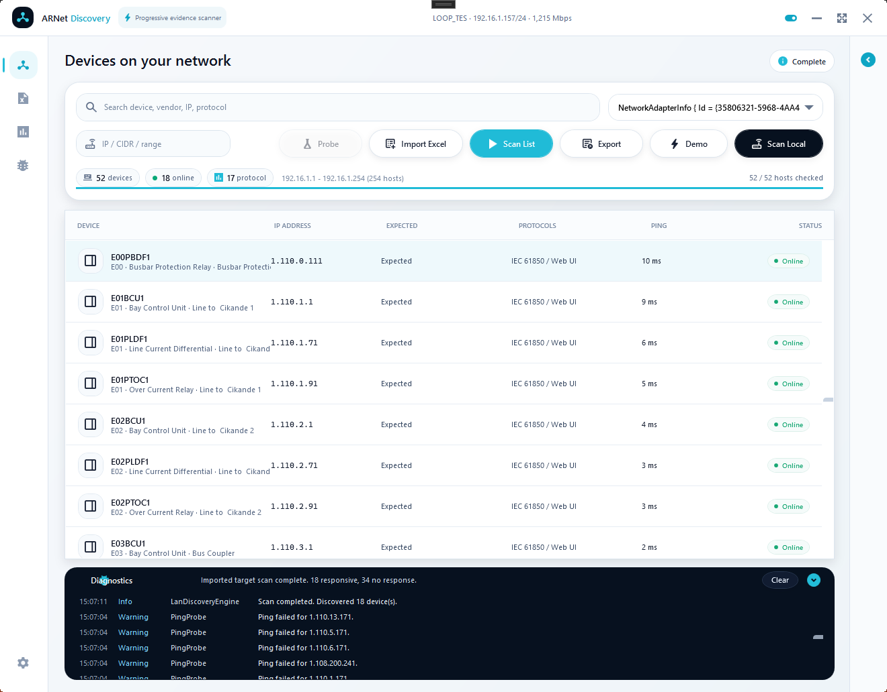

Substation LAN discovery without the manual ping ritual.
Find visible devices, verify target lists, and review protocol evidence from a portable Windows desktop app.

Preview
Built for field visibility, not network theatrics.
ARNet Discovery keeps the main device table central, treats protocol labels as evidence, and gives engineers a clean record they can export.
Discover devices faster
Scan the selected laptop adapter, probe known IPs, or verify imported targets without one-by-one ping checks.
Read protocol evidence
Review IEC 61850, IEC 104, Modbus TCP, DNP3, OPC UA, web UI, SSH, and Telnet signals.
Export field records
Save CSV results for FAT, commissioning, troubleshooting, and punch-list follow-up.
Download, extract, run
The Windows portable package is built by GitHub Actions and includes the app, quick-start PDF, user manual PDF, license files, notices, and checksums.
Release package
Open the latest GitHub release and download the Windows x64 portable ZIP.
GitHub ReleasesField workflow
Select the adapter, choose the scan mode, inspect the evidence, and export the result when it should become part of the project record.
Protocol evidence
ARNet Discovery performs lightweight evidence checks and clearly separates evidence from confirmed device identity.
Designed for engineering visibility
The main table stays central. Inspector and diagnostics panels stay available without taking over the screen. Imported targets appear first, then scan evidence updates progressively.
RoadmapSafe by design
The app is built for discovery and evidence checks. It does not send control commands to devices. Use it only on networks where you are authorized to test.
Frequently asked questions
What is ARNet Discovery?
A portable Windows app for substation LAN discovery, relay IP scanning, target-list verification, and lightweight protocol evidence checks.
What can it be used for?
FAT, SAT, commissioning, lab validation, project IP-list checks, and first-pass troubleshooting when devices are not visible as expected.
What must be installed?
For normal use, nothing beyond Windows. Download the portable ZIP, extract it, and run ARNetDiscovery.exe.
What hardware is needed?
A Windows laptop and a network adapter connected to the engineering LAN, panel switch, relay network, or test bench.
Does it need a configuration file?
No configuration file is required for basic scanning. Import Excel, CSV, or TXT when you want to verify an official target list.
Why does traffic or evidence not appear?
The selected adapter may be wrong, the device may be powered off, routing/VLAN/firewall rules may block traffic, or the expected protocol service may be disabled.
Does it control devices?
No. The app is for discovery and evidence checks. It does not issue control commands.
Is it free?
Yes. It is free and open source under Apache-2.0 with no subscription and no license key.
What are the technical limits?
Open ports and protocol labels are engineering evidence, not formal identity proof. Use the result as a field snapshot and continue with required commissioning and cyber-security procedures.
Free, open source, and built for practical field use
ARNet Discovery is distributed under Apache-2.0. You can use it, study it, build it from source, and contribute improvements through GitHub.